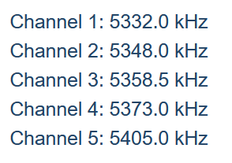

A reasonable signal (QSB but peaks nicely), working US calls and
EU up 1-2 BUT that spectrum is NOT within the US allocations. It
falls in between our channels 2 and 3.
60M doesn't count for DXCC but there are a LOT of Extra class
calls being worked that aren't within the law; at least the way
I'm reading it.
Their band plan states they'll listen on channel 3 (5357) which
is heavily used for FT8 (meaning they won't likely listen or
hear).
The following is CHANNEL CENTER and the US is allowed +/- 1.4 KHz from these frequencies (make room for bandwidth too, ~100-150 Hz for CW).
(You can go no lower than 5357.1 for CW on channel 3; channel 2 highest is 5349.3 for CW, below j38r.)

Do the math, it ain't worth the risk.
73,
Rick nk7i
PS 160CW is up and down, logged it by sheer luck (better lucky
than good?), with low noise tonight (Kp is 0) so pay attention
there too. 1.828.5